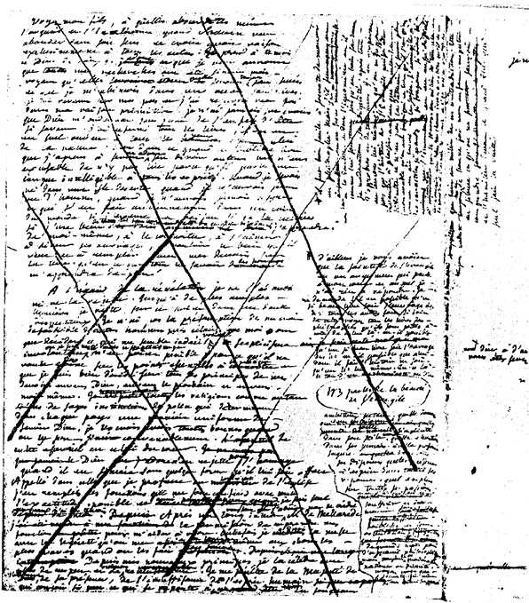
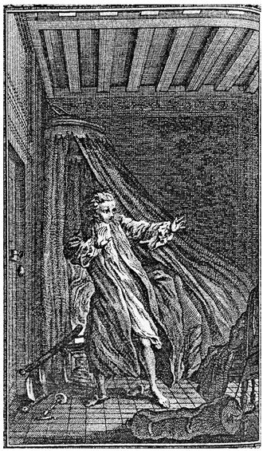
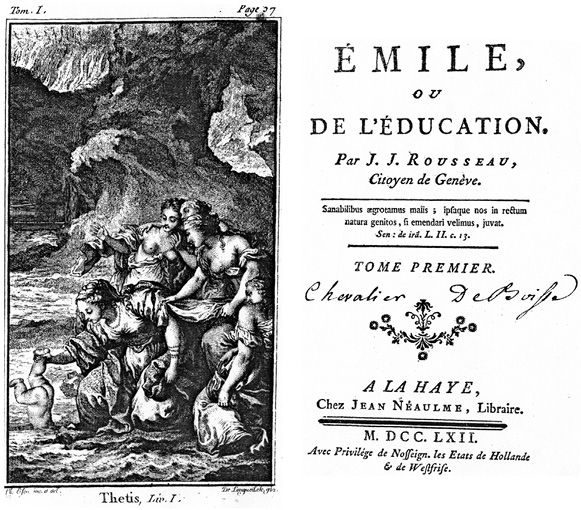
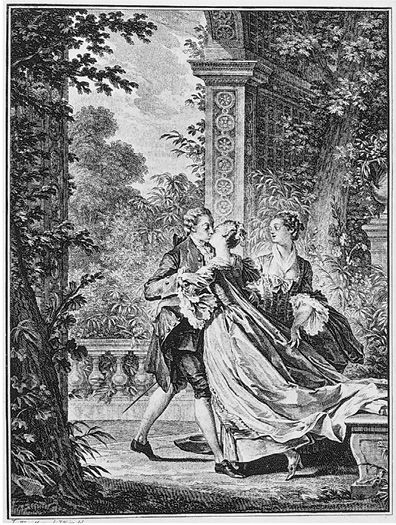

在古代，每个国家都有各自信奉的神。卢梭在《社会契约论》第四卷第八章中评论道，神的权威被政治疆界所限制。首先是犹太人，然后是基督徒，他们向上帝表达了敬意，但地球并不是上帝的天国，人的世俗地位和精神主导权有时候不能相互匹配，从而导致宗教与政治的分裂。罗马人在他们的帝国传播信仰，他们质疑其他国家的基督徒所宣称的对政治的冷漠，担心他们最终会反叛，并迫害罗马人。卢梭适时地观察到，当时部分基督徒确实放弃了他们的谦卑，宣称对上帝的属地拥有主权，建立了现代世界最残暴的专制统治制度。在卢梭所处的时代，政治和神学的身份在任何地方都是混乱的，甚至在当时的穆斯林中也是如此，因此“基督教精神完全赢得了胜利”。牧师行使企业权力，他们凭借圣职需要的生活规则和将人驱逐出教会的权力，实现对君王的控制。相比之下，在英国和俄罗斯，君王自己成了教会的领导人，同样有可能造成宗教和世俗主权之间产生分裂的风险。在基督教作家中，霍布斯是唯一认识到这种情形会对国内和平产生威胁的人，他正确地提出，世俗和宗教的权力应该归于同一个人手中。但是他没有考虑到基督教带来的危险，也忽略了这样一个事实：无论权力集中在什么地方，君主的特殊利益总是比国家的共同利益更能得到政府的有力支持。
对基督教颠覆人民主权的神圣基础进行反思之后，卢梭从社会维度将宗教信仰分为三种主要类型：人类的宗教、公民的宗教和牧师的宗教。第一种是对《福音书》的简单信仰，它消解了人对国家所有的忠诚；第二种，把神圣的崇拜与对法律的热爱结合起来，使人容易相信，也使人缺少宽容；第三种，使个人承担宗教制度和君主政府下两种对立的义务，使个人与自己及其同胞产生矛盾。卢梭认为，这三种类型的宗教信仰都对国家有害，第一种最为有害，而人们会错误地认为第一种是想象中最好的，因为它要求信徒们具有共同的信仰和深信不疑的虔诚。事实上，一个由真正的基督徒组成的社会在精神上可能会非常完美，它的公民完全不关心世俗的成功或失败。公民只有在尊崇宗教的意识下才会履行他们的职责，并且决心确保他们的灵魂得到救赎。卢梭质问道：信仰基督教的国家怎么可能对抗“被对荣誉和国家的强烈热爱吞噬”的斯巴达或罗马的爱国战士呢？真正的基督徒是被奴役的，比起追求公共的善，他们的信仰更容易屈服于暴政。
国家要从其公民身上汲取真正的力量，就必须培育公民信仰一种宗教，使每个公民热爱自己的职责，而不是通过教规、圣礼和教条来侵犯公民的信仰。国家必须要求它的公民有一种纯粹的公民信仰，君主的规定仅仅是为了激发公众社会性的情感，其信条应该是只接受全能、智慧、仁慈的神性唯一存在，接受社会契约和法律的神圣性，以及对不宽容者的放逐。由于信仰本身无法强制要求，主权者只能把所有不可避免会对社会结构产生威胁的不宽容者驱逐出其领土，甚至可能将那些背叛公民效忠宣誓内容的个人（在法律面前撒谎，暴露出违反法律并犯下罪行的）处以死刑，而他们的这些行为并非为了亵渎神明，而是为了煽动暴乱。卢梭在其评论中尤其强调相同的主题，他从《社会契约论》开始便预见，并且在1756年给伏尔泰的《天命书简》（《卢梭书信全集》，第424页）中进行了阐述。卢梭提出，神学上的不宽容一定会带来险恶的政治后果。他在文章倒数第二章的附注中提到，也许由于他想要竭力克制让他颇为不习惯的谨慎，在他的著作付印之际他还在抱怨，对公职和私人遗产的监管及牧师对民事婚姻契约的控制对国家的根基构成了威胁。在1685年废除《南特敕令》和1724年颁布规定天主教对新教婚姻和洗礼进行赐福祈祷的法令之后，卢梭在《日内瓦手稿》相应的段落中更明确地抨击了法国对新教徒的不宽容。卢梭认为，法国的新教徒只有在脱离自己的宗教信仰后才能结婚，他们在被禁止的同时又被容忍，就好像官方政策规定，他们应该以非法婚姻的方式生活和死去，生下无依无靠的私生子。卢梭总结道：“在所有的基督教教派中，新教徒是最明智、最温和、最和平、最合群的。”这是唯一允许法治和公民权利的权威占上风的基督教会（《作品全集》第三卷，第344页）。
卢梭强调罗马天主教不适合作为国教，他在《社会契约论》中对宽容的呼吁与洛克1689年写的《关于宽容的一封信》有相似之处，尽管卢梭强调古代共和国立法者所建立的政治巩固关系的章节更多地归功于柏拉图的《法律篇》及更重要的马基雅维里的《李维史论》，马基雅维里也同样认为罗马的民间宗教比罗马基督教对上帝之城的崇拜更有吸引力。在所有现代思想家中，卢梭给马基雅维里留下了最深刻的印象，不仅因为他对自由的热爱，还因为他对宗教在公共事务中所处地位的深刻理解。然而，尽管他们之间存在明显的相似性，他们在宗教哲学上的区别也同样明显。因为马基雅维里赞成宗教信仰，认为宗教信仰促进了公民的爱国精神，卢梭也热切地关注宗教信仰的本质，但与马基雅维里不同的是，他的启发源自耶稣的生平和事例、《福音书》，以及一些使徒的教义。他曾为自己在上帝宇宙中所处的位置而感到困惑和惊奇，这一点也曾经对圣奥古斯丁造成困扰，他的自传《忏悔录》用全新的表述呼应了这一点。如果说卢梭对宗教政治影响的理解是受到了马基雅维里的影响，那么他对宗教信仰本身，以及他对牧师圣职和教堂的看法也同样是宗教改革的产物。在西欧已经相对世俗的文学界，卢梭强烈的宗教信仰几乎是独一无二的。虽然他不相信人类最初失去了上帝的恩典，他在《论不平等》《论语言的起源》及几部短篇作品中描绘了整个人类历史中罪恶的产生，显然是以现代的笔触对《创世记》中人类离开伊甸园、建造巴别塔进行了重述。他在《社会契约论》《论波兰政府》及其他地方对立法者和建立新国家的评论，是对《出埃及记》的再现。像基督教神学家贝拉基一样，他相信人性的本质是善良的，是由上帝塑造的；像阿伯拉尔一样，他对爱洛伊丝的禁忌之爱塑造了18世纪最成功的法国小说，他深信理性的力量能够理解上帝的启示；像帕斯卡尔一样，他在动荡世界的沧桑中所坚持的信念被一种深刻的内心之光所照亮。
除非是音乐，其他任何主题都无法像对上帝的爱那样深刻地打动卢梭。音乐成为他作品中一个永恒的主题，从1739年左右受华伦夫人信仰天主教的影响起草早期祈祷文，到1764年在《山中来信》中回应他的批评者以辩护他的宗教信仰，再到他生命最后阶段创作的《一个孤独漫步者的遐想》（主要创作于1777年）中所阐述的自然宗教，在其中他描述道，就像上帝那样，他对自己的存在完全找到了一种自足感（《作品全集》第一卷，第1047页；《一个孤独漫步者的遐想》，第89页）。在他的大量信件中，尤其是1762年1月26日写给出版负责人马勒泽布（《卢梭书信全集》，第1650页）的信，以及在1769年1月15日写给洛朗·艾蒙·德·弗兰基耶尔（《卢梭书信全集》，第6529页）的信中，卢梭赞美了真挚信仰所带来的喜悦：首先，他为神的存在而欣喜，对自然奇迹的无限拥抱使他狂喜；其次，他对个人自发被上帝和真理吸引的内在情感，以及对滥用才能而导致的罪恶进行了思考，他的这些观点获得了史无前例的大量评论。但最重要的是，在《爱弥儿》的一篇长篇文章《萨瓦神父的信仰告白》中，卢梭对上帝的信仰得到了最充分、最雄辩的阐述。1761年，在《新爱洛伊丝》的结尾部分，卢梭小说中的女主人公朱莉把她意外溺水的儿子救出来后，在临终前说出了一个新教女人的信条：“在新教团体中，《圣经》和理性是唯一准则。”（《作品全集》第二卷，第714页；《新爱洛伊丝》，第586页）朱莉的身份只是虚构的，然而，她的创作者让她说出了自己的想法。在《爱弥儿》里，朱莉最终要成为一个流放的修道院院长（以卢梭年轻时认识的两个牧师为原型），离开能看得见阿尔卑斯山的一座小镇外的山坡，成为一个年轻的流放者。卢梭以第一人称的形式呈现于自己面前，为作品中描绘的弟子及所有读者树立了榜样，这就好像是作者的登山宝训。

图18 《法弗尔手稿》中《萨瓦神父的信仰告白》书页
卢梭将《萨瓦神父的信仰告白》分为两个部分，并且以讲述者和爱弥儿的家庭教师身份出现，采用一种虚构的方式回忆起曾经稚嫩的他沉迷于对牧师的崇高顿悟；他看到了另一个宇宙，就像他在现实中拜访在文森监狱里的狄德罗时所看到的。在第一部分中，他描述了人性的二元性：一方面是感觉的惰性，上帝是让所有事物运动的外部和最终的煽动者，也是最高智慧，罪恶的责任应该由人类独自承担，另一方面人类又有获得幸福和美德的能力。在第二部分中，他谴责了人对奇迹和教条的信仰，以及教会通过违背理性的《圣经》和神秘主义对普世权威不容异己的自命不凡。卢梭在第一部分旨在反驳当时一些主要哲学家 的怀疑论和唯物主义，提供了他关于宗教与自然相一致的论述；第二部分通过抨击罗马天主教的偏执和迷信，阐述了他对被视为启示录的宗教观念的批判。
洛克在《人类理解论》第四卷的第三章和第六章中声称，至少可以想象，如果上帝愿意给物质增加思考的能力，就可以用思想的力量使感觉迟钝的粒子活跃起来。在随后专门论述“我们对上帝存在的认知”这一章中，实际上他预见了卢梭的一些观点，他坚持认为，物质本身是不可能思考的。他在这个问题上的大部分言论都是为了反对当时的唯物主义者，主要是斯宾诺莎主义者，他们所主张的是他所否认的观点。但是，他所提出的上帝可能让物质思考的观点引发了18世纪早期神学家和哲学家的众多反驳，他们当中大多数人将这一论断与洛克在其著作同一部分中进一步提出的观点联系起来，即道德和宗教的真理并不取决于灵魂的非物质性。伏尔泰在1734年《哲学通信》中评论了洛克的观点，法国18世纪中期的唯物主义者，包括莫佩尔蒂和拉美特利，从中获取了灵感；其中一些人（如狄德罗）强调了有机物固有的应激性和生命力，另一些人（如霍尔巴赫）认为所有现实都仅存在于物理世界里，从而认为精神实体、灵魂，甚至上帝都是虚幻的。孔狄亚克在其1754年《感觉论》中，试图从纯粹的感官经验中构建一个关于人类智力形成的理论；发表在1756年出版的《百科全书》第六卷中的《证据》一文，其作者可能是弗朗索瓦·魁奈，这篇文章也提出了相似的论点，认为感觉能引起判断；1758年，《论精神》震惊了教会，比后来《爱弥儿》激起了更多的官方愤慨，爱尔维修将这种判断与感觉的关联作为他整个作品的基石。洛克关于物质可能进行思考的主张和爱尔维修关于判断就是感觉的推论，共同构成了卢梭进行批判的主要焦点，这也是卢梭在《萨瓦神父的信仰告白》中证明上帝存在的主要出发点。
在《萨瓦神父的信仰告白》（《作品全集》第四卷，第584页；《爱弥儿》，第279页），以及卢梭后来给德·弗兰基耶尔先生的信中（《作品全集》第四卷，第1136页），“无论洛克怎么说”，他都认为物质可以进行思考是“完全荒谬”的假设，并对其进行了谴责。牧师说，要使物质进行思考是不可能的，因为物质所遵循的任何运动都不会引起思考。尤其和爱尔维修相反，他断言，人所做的判断并不来自他们的感觉，因为虽然物体可能会通过被动的感觉留下印象，我们不可能对事物之间的关系有自动的印象。除非我们积极地解读我们的经历，从而形成自己的判断，否则我们永远不会犯错误或者被欺骗，因为我们的感觉将永远代表事实。因此，爱尔维修的哲学并未能赋予我们“思考的光荣”（《作品全集》第四卷，第571—573页；《爱弥儿》，第270—272页）。唯物主义者之所以会犯错是因为他们对内心的声音充耳不闻，这种声音让卢梭确信我们对自身存在的感觉无法由无组织的物质产生，因为无组织的物质本身就缺乏产生思想的能力，而思想必须产生于某种自我驱动的动因，一种意志的自发行动或自发表达。这是卢梭的第二 （他自认为这是第一）信条 （《作品全集》第四卷，第576、585页；《爱弥儿》，第273、280页）。
他坦言，他最初处于笛卡尔为追求真理所要求的那种怀疑状态，在意见的汪洋大海中漂泊，没有舵，没有罗盘，汹涌的激情和哲学家指导的缺乏让他左右摇摆缺乏方向；哲学家们都一致认为，他们之间应该彼此不同，甚至连自称是怀疑论者的人，在他们的破坏性批评中也坚持教条主义（《作品全集》第四卷，第567—568页；《爱弥儿》，第267—268页）。他在哲学中找到了更多的理由来忍受折磨，而未能从这种怀疑中解脱出来；他转向自己内心的光明，转而愿意让自己的心引导自己拥抱对真理的纯朴之爱。这样，他很快找到了自己的存在感，并发现有些感觉一定是源自外部，因为他并没有靠自己的意志将其唤醒。他能从他的感觉本身感知到，感知的对象和来源都独立于他本身之外，从而见证了他之外的其他实体的存在。看到宇宙形成的物质运动，他明白了没有方向就没有运动，没有目标就没有方向。确定的运动引发意志，而意志引发智慧。牧师说，这是他的第二信条。他认为，这种意志显然是明智而富有力量的，它弥漫在旋转的天空中、落下的石头中、随风飘动的树叶上。“我在上帝创造的万物中看到了上帝无处不在，”他声称，“我能感觉他在我体内。”（《作品全集》第四卷，第578、581页；《爱弥儿》，第275、277页）
除了知道宇宙存在的必要性外，牧师对宇宙的秩序一无所知，尽管如此，他仍然对造物主的技艺表示赞叹。而且，在对自己的思想进行反思后，他可以看到他的意志独立于他的感官之外，允许他人同样拥有独立的意志让他看到了“地球上罪恶”的混乱，与自然的和谐完全不同。牧师声称，由此出发，即认识并接受人的行动自由，形成了他的第三信条（《作品全集》第四卷，第583、586—587页；《爱弥儿》，第278、281页）。他断言，人类的行为不当源于自由选择，不能归咎于上帝，因为上帝是善良和公正的（《作品全集》第四卷，第593页；《爱弥儿》，第285页）。抱怨上帝未能阻止我们作恶，这是在抗议上帝将道德赋予人类，正像卢梭在1756年给伏尔泰的信中所说的那样，上帝赋予了我们自由，我们可以选择善，拒绝恶。上帝使我们有能力做出选择，就意味着上帝不会为我们做出选择。当我们滥用我们的能力作恶时，我们的行为并不代表上帝，而是代表我们自己。“人啊，不要再寻找邪恶的始作俑者了。就是你自己！”牧师高呼（《作品全集》第四卷，第588页；《爱弥儿》，第282页），仿佛是在概括撒旦在弥尔顿《失乐园》中说过的话，卢梭把这些话抄写在《新爱洛伊丝》第十章的铭文上：“你想逃到哪里去？”“灵魂在你心中。”（《作品全集》第二卷，第770页；《新爱洛伊丝》，第504页）
与洛克相反，萨瓦神父坚持灵魂的非物质性和它的不朽性，尽管他声称不知道恶人是否会遭受永恒的诅咒，甚至对他们的命运表示漠不关心。完全遵从内心的情感，他发现自己至少可以做出决定自己命运的道德判断。“我一生中所犯下的所有罪恶都是因为缺少反思”，卢梭后来在给米拉博侯爵（《卢梭书信全集》，第5792页）的一封未写完的信中哀叹道，回忆从奥维德、保罗到罗马人的著名诗句，“我做的那点好事是出于一时冲动”。尤其受到英国哲学家和神学家萨缪尔·克拉克《关于上帝的存在和属性的论述》的启发后，他在《萨瓦祖父的信仰告白》、在写给德·弗兰基耶尔先生的信中，以及其他作品中，把这种本性的冲动称为良心 ，称为“一种天生的正义原则”（《作品全集》第四卷，第570、598、1135页；《爱弥儿》，第269、289页）或灵魂内在的声音，它们之间的关系正如本能与肉体的关系一样。良心！这个不朽的声音是美德的万无一失的向导，牧师声称，他为上帝的恩赐而祝福上帝，却不向上帝祈祷。他能要什么呢?不用索求行善的能力，因为他生来就已经有这种能力。也不能要求上帝替他干活，而他自己收工资。上帝不是已经赐予了他爱善的良心、识善的理性和择善的自由吗？（《作品全集》第四卷，第605页；《爱弥儿》，第294页）

图19 格拉沃洛画的《新爱洛伊丝》中的整页插图“你想逃到哪里去？”（阿姆斯特丹，1761年）
在《萨瓦祖父的信仰告白》第二部分的最后，牧师讲述他想继续担任教区牧师的抱负饱受挫折；他请求年轻的卢梭要真诚，要在不宽容的人中弘扬人道主义精神，并将自己信奉的自然宗教与教条主义的信仰、神迹和启示对立起来。他说，面对大自然给我们的眼睛、心灵、判断力和良心带来的巨大震撼，竟然还需要其他宗教，这似乎很奇怪。然而，我们被告知，需要通过启示来教导人类如何侍奉上帝（《作品全集》第四卷，第607—608页；《爱弥儿》，第295页）。仅在欧洲，我们就有三种主要的宗教。第一种只接受一种启示，第二种接受两种启示，第三种接受三种启示，每种宗教都厌恶并诅咒其他两种；它们的书甚至对于识字的人而言都几乎无法理解，犹太人无法理解希伯来语，基督徒无法理解希伯来语或希腊语，土耳其人无法理解阿拉伯语。在每种情况下，每个人仅需要知道书本中的内容。总是书！欧洲到处都是书（《作品全集》第四卷，第619—620页；《爱弥儿》，第303页）。在每种情况下，上帝的使者各自诠释上帝的意图，设法让上帝说出他们想要传达的内容，通过使用对其他人而言是神秘的符号和奇迹，来为迫害异教徒进行辩护。一个没有奇迹的世界将是最伟大的奇迹（《作品全集》第四卷，第612页；《爱弥儿》，第298页）。
当使者们不在国内追捕异教徒的时候，上帝启示的传播者就会派遣传教士到国外传教，威胁所有不理会他们的人将面临永久的诅咒。他们几乎不敢走得太远。被奴役在后宫的东方妻子的灵魂会等来什么样的命运？会因为隐居而下地狱吗？（《作品全集》第四卷，第622页；《爱弥儿》，第304—305页）牧师承认，圣洁的福音当然是在向神父的心灵诉说。当然，耶稣的教导中有一种崇高的恩典，就像苏格拉底的智慧一样崇高。耶稣的生与死表明耶稣是神。但同一福音中有太多的东西是不可思议的，是与理性相抵触的，是任何一个明智的人都不可能接受的（《作品全集》第四卷，第625—627页；《爱弥儿》，第307—308页）。让神的话语少一些神秘。难道他赋予我们理性的能力，只是为了禁止我们使用它吗？我们独立侍奉他不行吗？“我所崇拜的上帝并不是影子之神。”牧师坚称（《作品全集》第四卷，第614页；《爱弥儿》，第300页）。让我们合上所有的书本，拥抱他朴素的真理，因为它是用各种语言记录的，所有人都可以接触到，就在打开的自然之书中（《作品全集》第四卷，第624—625页；《爱弥儿》，第306—307页）。启示之神使用太多语言了。“我宁愿听上帝自己说……上帝和我之间隔着太多人了！”（《作品全集》第四卷，第610页；《爱弥儿》，第297页）
卢梭在《社会契约论》和《爱弥儿》中对宗教和基督教本质的这种思考，在法国的教会中根本不受欢迎，卢梭对此应该不会感到过于惊讶。伏尔泰采取了足够的谨慎措施，从法国边境比较安全的一侧宣传他对罗马天主教最严厉的谴责。但是卢梭在荷兰和法国同时出版了《社会契约论》和《爱弥儿》之后，却恣意写作，颠覆了他原有的尊贵形象，他对当时居住国家的官方反应毫无准备。他的作品在日内瓦被禁，他无法逃回祖国，这使他更加沮丧。1762年8月，巴黎大主教发布命令，谴责《爱弥儿》有害的教义。在此之前索邦神学院已经正式谴责了这篇文章，而巴黎市议会下令让刽子手将其焚毁。此时，卢梭已经逃离了法国。“你唯一能证明我有罪的证据就是原罪”，他在回信《致博蒙书》中提出了抗议，这也是他关于神学的著作中篇幅最长的一部，发表于1763年初。上帝让我们清白无辜怎么会只是为了证明我们是有罪的，从而把我们扔进地狱呢？他问道。难道严厉的原罪教义主要不是圣奥古斯丁和神学家的发明，而是《圣经》的精髓吗？我们不是都认为人性本善的吗？你说人性是恶的，因为他本来就是恶的，而我现在却告诉你人性是如何变恶的。我们中谁最接近第一原理？卢梭坚持认为，《爱弥儿》是写给基督徒的，通过洗礼洗净了原罪，就像亚当最初被上帝创造时一样纯洁（《作品全集》第四卷，第937—940页）。
卢梭本想在日内瓦避难，但1762年6月，日内瓦政府小议会烧毁了《爱弥儿》和《社会契约论》，因为它们被认为亵渎神明，威胁公共秩序和宗教。卢梭被迫逃亡，先是逃到伯尔尼境内的伊弗顿，然后逃到附近的莫蒂耶，后来村民用石头砸他的房子将他赶了出来。起初，他热切地希望他的同胞在代表他提交的意见书中，让他重新回到他们中间。但他发现政府的支持者，即反面派（Négatifs），对这些代表的反对极为有力，很快他就对恢复他的政治公民权不抱任何希望，他也放弃了他的同胞们。1763年9月，日内瓦总检察长让·罗伯特·特龙金把对他的指控放进了该国的一批信件中，他在第二年写了《山中来信》进行回应，但他在其中只寻求自我辩护。既然新教在原则上是宽容的，而且像《社会契约论》中的公民宗教一样，只是在对不宽容的谴责上是武断的，他想知道，一个新教国家的小议会怎么能采用圣保罗的残酷迫害手段和宗教法庭的严格审判呢？（《作品全集》第三卷，第702、716、781页）他还详细回想了大议会集会的历史，大议会集会是在面临饥荒、暴君和战争威胁时“对共和国的救赎”（《作品全集》第三卷，第856页），他现在出于爱国精神谴责一个国家政体的堕落，他认为这个国家政体曾经为欧洲其他国家树立了光辉的榜样，是他的《社会契约论》维护了这样一个出色的典范。当然，正如他自己已经表明的那样，阻止政治腐败是不可能的。他评论说，由于“自然发展”，日内瓦政府改变了其形态，“从多到少逐渐改变”，似乎要用一个具体的例子来预示罗伯特·米歇尔斯的寡头政治铁律（《作品全集》第三卷，第808—810页）。“没有什么比你们合法的国家更自由；没有什么比你们现在的国家更具有奴性的了。”卢梭总结道（《作品全集》第三卷，第813页）。
一个忠诚公民出于真诚信念的这些抗议，受到日内瓦各地及其他许多地方的赞扬，这些抗议后来启发了年轻的黑格尔和其他热爱自由的人，让他们同样被在自然中显现的非神秘的上帝所吸引。但是，这很难使卢梭受到当时主权者的喜爱，巴黎大主教和日内瓦小议会都认为《爱弥儿》和《社会契约论》是对一切现存权威的威胁。所有基督教的教会都阻隔在卢梭和上帝之间，所有现代国家的政府都阻隔在人民和主权之间。制度替代个人意志和集体行动的力量，剥夺了民族的精神和公民的身份，这是当代文明的主要道德灾难。卢梭认为，良心的自由需要直接来自上帝的话语，正如立法的集会自由需要一个无代表的主权。反启蒙主义神学和专制的权利一起使人依赖于他人的意志，因此，正是这些力量的代理人最渴望压制它们，这些代理人据以理解自身的视角是，卢梭对自由的吁求挑战了他的哲学思想。
为了克服对他人的依赖，实现自力更生，卢梭在《爱弥儿》一书中提出了一项教育计划，其核心目标是将儿童从成人期望的暴政中解放出来，这样他们的能力就可以在适当的时候不受约束地发展。在第一本书的开头，他根据不同来源将教育分成三种类型：自然、事物和人。他提出，只有同时接受这些管教形式的孩子才能得到很好的培养。但他接着又指出这种全面的教育必然非常困难，因为自然人完全为自己而活，而为整个社会而活的公民则必须改变天性，其独立身份转变为一种相对的存在，使其成为更大整体的一部分。然而卢梭认为，如果自然教育或家庭教育能够以某种方式与公民教育相结合，那么人类的矛盾就可能被消除，这是人类幸福的主要障碍（《作品全集》第四卷，第247—251页；《爱弥儿》，第38—41页）。一些解读卢梭理论的人认为，这种和解是《爱弥儿》的主要目标。因此，《爱弥儿》可以被理解为儿童走向公民身份的发展手册，而公民的责任在后面的文章中得到了概述，并在《社会契约论》中得到了详细论述。但是《爱弥儿》中有一小段是专门讲政治的，大约有二十页，直到第五卷的结尾（《作品全集》第四卷，第833—852页；《爱弥儿》，第455—469页），卢梭似乎并不是想要用对公众生活的崇高教育来为他精心制定的家庭教育计划加冕。虽然它概括了《论不平等》和《社会契约论》中的一些主题，但它更多的是勾勒了《爱弥儿》以后的研究课题，而不是对政治教育进行充分考量，因为他在当时还尚未准备好。家庭教师承认，如果他的学生抱怨他用木头而不是用人来建造自己的大厦，他也不会感到奇怪（《作品全集》第四卷，第849页；《爱弥儿》，第467页）。《爱弥儿》大部分结构分散，内容过多，还包含一些关于政治的晦涩段落，这可能是由于卢梭在1750年代后期经历了一段身体不适以后，担心这可能是他最后的主要著作。《爱弥儿》出版后，卢梭开始起草一部续集，在他去世后以《爱弥儿和索菲》或《一个孤独漫步者的遐想》（《作品全集》第四卷，第879—924页）为名出版。他所描绘的爱弥儿不是一个积极参加公共事务的公民，而是一个绝望地给他的家庭教师写信的成年人，诉说他的世界已经崩塌，他的妻子抛弃了他，他接受的教育并不能解决他的人性弱点。
虽然爱弥儿的智力和道德的发展是为了拥有男人和女人的陪伴，但卢梭特意采取了一种不加强迫的方式，旨在适合他的天性。文中从未重新塑造爱弥儿的性格，或者为了让他成为比他个体重要的某个整体的一部分而准备接受全新身份，就像卢梭在《社会契约论》中所描述的公民身份和民主主权那样。相反，他仍然忠实于他在1757年为德皮奈夫人的嫂子索菲·德·乌德托所写的《道德书简》中的核心主题。当时卢梭对她一片痴情，他充当了她精神上的忏悔师和心灵上的导师。卢梭只为索菲写了六封《道德书简》，主要论述了笛卡尔在《方法论》中所追寻的精神追求的模式。但是这些《道德书简》被扩展和重新组合后，就成为《爱弥儿》中的部分章节。它们描写了一个女人和她对幸福的追求，与公民身份的考验和吸引力几乎没有关系，而是聚焦在孤独个体自力更生和自给自足的主题上。“让我们从重新成为自己开始，只关注我们自身。”卢梭在第六封信中这样评论。让我们努力认识我们自己，剥离那些和我们无关的东西，因为对人类自我和个体自身存在之本质的把握，是通往人类认知的道路（《作品全集》第四卷，第1112—1113页）。
这也是《爱弥儿》的核心教育主线，尊崇其天性，却不是《社会契约论》的中心主题。对于卢梭的公民教育计划，读者必须转向他的其他作品，特别是他的《政治经济学》和《论波兰政府》，这两部作品都深受柏拉图《理想国》的影响。在《爱弥儿》中，他称赞《理想国》是有史以来最出色的教育专著（《作品全集》第四卷，第250页；《爱弥儿》，第40页），尽管他清楚地表明了他头脑中有公共教育的思想，并认为《理想国》中“公民滥交”是“高贵的天才”的过错，他们在不分性别的体育锻炼中混淆了两性，并要求女人变得像男人一样，因为在让她们脱离了家庭生活后，柏拉图不知道她们应该充当什么角色（《作品全集》第四卷，第699—700页；《爱弥儿》，第362—363页）。与《爱弥儿》相反，《政治经济学》和《论波兰政府》对公共教育问题尤为关注，因此，这两部作品呈现出很多《理想国》的影子。在《政治经济学》中，卢梭谈到了使人热爱其职责及法律的艺术，以及通过树立公民美德和爱国主义的榜样来教育公民行善的艺术（《作品全集》第三卷，第251—252、254—255页；《〈社会契约论〉及其他晚期政治著作》，第13、15—16页）。卢梭提出在政府规定的公民教育的名义下，在平等的怀抱中养育年轻人被认为是国家最重要的职能之一，因为公民不是一天就能形成的，为了拥有他们，必须从小教育他们（《作品全集》第三卷，第259—261页；《〈社会契约论〉及其他晚期政治著作》，第20—21页）。在《论波兰政府》第四章中，卢梭描述了婴儿从出生那刻起就需要凝视自己的祖国，这样他们母亲的乳汁中就会渗入对祖国不可磨灭的爱，直到死前，他们都不会割断这种连接（《作品全集》第三卷，第966页；《〈社会契约论〉及其他晚期政治著作》，第189页）。在文中，卢梭谈到了公开表演的体操运动，并根据观众的掌声决定是否颁发优秀奖（《作品全集》第三卷，第968页；《〈社会契约论〉及其他晚期政治著作》，第191页）。在卢梭的所有作品中，都有对柏拉图的大量引用，除了普鲁塔克的作品和《圣经》之外，柏拉图是卢梭引用最多的权威，而在专门论述公民教育的段落中，以及《致达朗贝尔论戏剧的信》中，柏拉图的《理想国》对卢梭哲学的影响最为明显。
也正是这些文字以及《山中来信》，最清楚地显示了柏拉图的《法律篇》对卢梭的影响。在《山中来信》的第八封信中，他评论道：一个自由的民族服从明智的法律的过程中，可能会有领袖，但是没有控制者（《作品全集》第三卷，第842页）。在《政治经济学》中，卢梭谈到了带给人们正义和自由的神圣而奇妙的法律（《作品全集》第三卷，第248—249页；《〈社会契约论〉及其他晚期政治著作》，第9—10页）。卢梭最为感激的是柏拉图的法律概念。在他的哲学中，法治对于公民的意义，就像上帝对于爱他的人、君主对于臣民的意义一样，是一种精神上崇高的存在；法治的权威公认是外在施加的，但同时却在人的灵魂中感受最深。对于本质上是柏拉图式的，以及后来基督教式的具有内在约束力的神圣秩序原则的观念，卢梭增加了自由这一维度和意志这一关键要素，从而构成了他的公共意志理论的核心，康德的自治思想和整体道德哲学都从中获得了极大的启发。但是《爱弥儿》中只描绘了家庭教育的谱系，这些公共生活和公民参与的特征在卢梭的论述中无足轻重。
像他的许多主要作品一样，《爱弥儿》在很大程度上被认为是对同一主题的不同观点的反驳。如果《萨瓦神父的信仰告白》这部分内容试图反驳洛克和爱尔维修，那么整部作品中关于教育的更广泛的论述，同样也驳斥了这两位作者的学说。对爱尔维修而言，这是再次针对他的《论精神》，而对洛克而言，是针对他1693年写的《教育漫话》。《爱弥儿》序言的第一页揭示了在洛克作品（《作品全集》第四卷，第241页；《爱弥儿》，第33页）之后，卢梭所论述的主题的原创性。后来他的文章对洛克的作品进行了大量的直接和间接引用，最重要的是他在第二卷中的评论——“培养儿童的推理能力是洛克的至理名言”。他在《教育漫话》中提出这一主张，并提出这种教育需要和儿童的能力相匹配。但是卢梭认为洛克整体培养儿童推理能力的体系是荒谬的，没有什么比不成熟思想的形成更危险，尤其是从出生到青春期，也没有什么比让儿童经受理性话语的扭曲逻辑更愚蠢（《作品全集》第四卷，第317、323页；《爱弥儿》，第89、93页）。

图20 《爱弥儿》卷首图和扉页（1762年）
“大自然希望孩子们在长大成人之前度过童年”，卢梭在《爱弥儿》和《新爱洛伊丝》中都坚持这一观点，“知道善恶，明白人的职责，这与孩子无关”（《作品全集》第二卷，第562页；《作品全集》第四卷，第318—319页；《爱弥儿》，第90页；《新爱洛伊丝》，第461页）。洛克曾说过，可以通过让孩子们进行分享来培养他们慷慨的习惯，以实际经验使他们相信最慷慨的人总是最富有的（《作品全集》第四卷，第338页；《爱弥儿》，第103页）。然而，在《爱弥儿》中，卢梭清楚地表明，通过直接了解才能知道得更清楚。1735—1742年在尚贝里、里昂和巴黎，卢梭曾经给难以管教的小暴君们做家庭教师，他们的反复无常让他的生活相当悲惨。结合他在三种不同情形下的经历，他痛苦地认识到，让孩子听从我们的意愿的唯一方法就是不给任何建议，什么都不要禁止，什么都不要劝诫，避免用无用的训教让其感到厌烦（《作品全集》第四卷，第364—369页；《爱弥儿》，第121—124页）。这些训教与他在年轻时给让·博诺·德·马布利所写的两份回忆录初稿中所提出的认真仔细、自觉关心他人的准则大相径庭，让·博诺·德·马布利是他一个可怕的学生的父亲，也是历史学家马布利以及孔狄亚克的兄弟（《作品全集》第四卷，第1—51页）。到了中年，由于抛弃了自己的孩子，也脱离了让人焦虑的责任，他也可以更自由地发表言论了。洛克认为，在孩子的房间里放置一些发明物是明智的，这些发明物可以在孩子认为自己只是在玩的时候教他识字，比如把字母粘到骰子上。卢梭惊叹道：真可惜，他忘记了孩子的求知欲，这种求知欲一旦被激发，就可以不再借用骰子了（《作品全集》第四卷，第358页；《爱弥儿》，第117页）。他在第二卷中补充道：“我绝不认为孩子们根本没有逻辑能力。”相反，他们在与他们有直接和明显的利益关系的问题上推理得很好。但是，让他们以洛克的方式去思考他们不能理解或不能影响他们的事物是错误的，比如他们未来的幸福，他们成年后的幸福，或者他们未来受到的尊重。对于没有远见、心智不成熟的孩子来说，这些担忧是陌生的、无关紧要的、不值得关注的（《作品全集》第四卷，第345—346页；《爱弥儿》，第108页）。
和其他教师们一起，洛克认为儿童的身体应该得到锻炼，且儿童的身体不应该因为紧身的衣服、腰带，尤其是法国人的服装而产生变形，法国人的服装不仅对孩子是极为不健康的约束，甚至对成年人也是如此——这些观点当然是正确的。他曾经引用一位塞西亚哲学家说过的一句令人信服的话：“你可以认为我全身都是脸。”这位塞西亚哲学家赤身裸体地行走在雪天，当一个雅典人问他怎么能把脸以外的东西暴露在寒冷中，他就是这样回答的。但是，为什么洛克不让孩子们的脚去经受高温的自然灾害呢？卢梭认为他在反驳洛克的时候可以说：“如果你希望人类的全身都是脸，你为什么要责怪我希望他全身是脚呢？”（《作品全集》第四卷，第371、374页；《爱弥儿》，第126、128页）“聪明的洛克”学过医学，他建议儿童只能少量服用药物，这也是正确的。但是他应该进一步遵循他自己的逻辑，并且认识到，除非病人的生命处于危险，否则不应该传唤医生，只有这样除了杀死病人治疗师才不会对其造成其他伤害（《作品全集》第四卷，第271页；《爱弥儿》，第55页）。
卢梭认为，洛克的教育哲学虽然在某些细节上令人钦佩，但整体上却是错误的，因为他把孩子们看作在学徒的岗位上成长的不成熟的成年人，接受技能培养，学习手艺，尤其是记账的能力，为他们日后成为绅士做准备。在这一点上，洛克的成就在西方文明的主要思想家中可能是无与伦比的。但卢梭认为，做一个真正的绅士就是成为舆论的玩物，要不断地讨好奉承。他在第五卷开篇补充道，他“没有培养绅士的荣幸”，因此他很谨慎地知道他不应在这一点上模仿洛克。卢梭仿佛预见了马克思在《德意志意识形态》中的观点，马克思在其中抱怨说，人只是猎人、渔夫、牧羊人或者批评家。而卢梭反对洛克并提出，他不希望他的学生成为绣花工、镀金工或画匠，也不希望他们成为音乐家、演员或作家，尽管他的目的主要是将有用的、有促进作用的行业和腐败的、有损人格的行当区分开，而不是像马克思那样，抗议强制的劳动分工（《作品全集》第四卷，第471—473、692页；《爱弥儿》，第196—197、357页）。卢梭提出，洛克的整体方法论充满迷信、偏见和错误，其首先构思了教育的终极目的，从上帝的概念、《圣经》的历史、人性普遍的精神层面开始，然后触及身体层面。要形成正确的精神概念，必须从身体开始，但是在他过于空灵的教育哲学中，洛克只是设法奠定了唯物主义的基础（《作品全集》第四卷，第551—552页；《爱弥儿》，第255页）。
此外，卢梭还深信，在国内教育这个主题上，爱尔维修的《论精神》构成了唯物主义最险恶的当代例证。在1762年9月写给让·安托万·孔帕雷的一封信中（《卢梭书信全集》，第2147页），以及《山中来信》最初的一些信件的注释中（《作品全集》第三卷，第693、1585页），卢梭声称，他原本打算抨击这部著名的作品，但后来放弃了对他的批评，从而让自己跟《论精神》所激起的“扒粪者”划清界限。现存的《爱弥儿》手稿表明，他对爱尔维修的敌意可能更多是他在1759—1760年的秋冬重读其作品时产生的，而不是他在一年前第一次读到这些作品时。但是，除了在《萨瓦神父的信仰告白》中明显提及《论精神》之外，他在1759年初《爱弥儿》的手稿（即《法弗尔手稿》）中，也明确表达了对爱尔维修感觉主义哲学的反对，而在最终完稿中却没有这些内容，在他阅读的爱尔维修的书中，他也删除了大量为了表达相似观点的边注，这些书现在存放于巴黎国家图书馆（《作品全集》第四卷，第113、344、1121—1130、1283—1284页；《爱弥儿》，第107页）。从《论精神》第一论的开篇开始，所有段落都集中在“判断从来就只是感觉”这一格言及其衍生观点上。卢梭认为，把客体的直接和被动的印象与对客体关系的主动理解混为一谈，是完全错误的。
除了《爱弥儿》之外，卢梭在《新爱洛伊丝》的第五部分中，以其成熟的笔触对教育主题进行了最全面的论述。他抨击《论精神》及其提出的天才仅仅是环境的产物这一论点，因为这就是假设我们的头脑只不过是柔软的黏土。卢梭通过交换圣普乐和朱莉以及朱莉的丈夫沃尔马的观点，把自己的教育哲学和他所理解的爱尔维修的教育哲学作了最鲜明的对比。沃尔马在很大程度上代表爱尔维修，他坚持认为，在没有罪恶或错误的自然中，人的任何性格畸形只有可能是因为教养不当。针对这一点，卢梭附加了一份手稿，对《论精神》的作者表示质疑。如果他真的对这个问题进行了认真的思考，他是否还会认为所有人在出生时在精神上都是毫无区别的，只会在成长过程中产生不同。圣普乐断言，如果我们之间的差异总是完全由于教育的影响，那么只需要向孩子们灌输他们的老师希望他们拥有的品质（《作品全集》第二卷，第563—565、1672页；《新爱洛伊丝》，第461—463页）。圣普乐同意朱莉的观点，即人在婴儿期有其独特的特点及感受，不能过早地加速其成长；与沃尔马不同的是，圣普乐认为每个婴儿都有自己独特的性格和天赋。“教育是万能的”这一格言成为爱尔维修去世后发表的《论人》中一章的标题，这也促使狄德罗的反对理由略有不同。在卢梭看来，这与对人类发展、个性和自由本质的任何正确理解都是格格不入的。
在《爱弥儿》中，至少通过《新爱洛伊丝》虚构的交换，他提出了一个艰难的艺术手段：没有戒律的管理及以无为成就有为（《作品全集》第四卷，第362页；《爱弥儿》，第119页），这与训练心智或改善性格正好相反。卢梭告诉他的读者，所有教育中最重要的规则不是赢得时间，而是失去时间，走一条不同寻常的道路，以确保对孩子的初次教育不会留下印记，“纯粹是消极的”（《作品全集》第四卷，第323—324页；《爱弥儿》，第93—94页）。在《致博蒙书》中，他谴责爱尔维修那种积极教育是企图过早地让年轻人形成思想，让孩子被成人的特点所拖累。相反，他在书中再次把“消极教育”描述为让儿童能够自己发展，因此这也是一种唯一有益的教育（《作品全集》第四卷，第945页）。甚至在其《论波兰政府》所提出的公共教育计划中，他又一次提出了完全相同的主张。他声称，只有符合儿童天性的消极教育才能避免恶习的产生（《作品全集》第三卷，第968页；《〈社会契约论〉及其他晚期政治著作》，第191页）。因此，他对爱尔维修的驳斥使他在《爱弥儿》和其他作品中倾向于一种人的自然属性的概念，在某些方面没有他在《论不平等》中所描述的那样具有适应性和可塑性。
在追求消极教育的过程中，卢梭建议教师们把书本放在一边，提供孩子们可以通过亲身体验来学习的课程。有时，在事先精心策划的情况下，人们感觉会模糊，并认为他们是依赖于事物而不是人，从而保留了自己的自由，正如卢梭在《爱弥儿》中所定义的那样。他提出，阅读总的来说是童年的诅咒，甚至拉封丹的动人寓言故事都不应该阅读；这些富有诗意的故事，其背后的道德目的对于孩子而言毫无意义，因为孩子很有可能不理解它们的意思，甚至可能对其中错误的性格产生认同感（《作品全集》第四卷，第351—357页；《爱弥儿》，第112—116页）。既然我们生来在身体和精神上都是不完整的，我们应该被允许自然地经历我们自然成长的各个阶段，从婴儿期到童年，到青春期，到青年期，然后到成年期，而作为一部自然教育的著作，《爱弥儿》本身大致符合这一点。卢梭在《爱弥儿》第一卷（《作品全集》第四卷，第272页；《爱弥儿》，第56页）提出，需求伴随生活而来，但这与孩子的渴望不同。孩子的渴望是由想象力激发的，是永远无法被满足的，从而使其变得暴虐，使他在挫折中变得暴躁。弗洛伊德学派后来将其原因描述为婴儿多形性反常。孩子不是在他能力的无限扩展中，也不是在他欲望的减少中找到满足，而是在对能力过度渴望的减少中获得满足，从而让他的意志和力量获得平衡（《作品全集》第四卷，第304、312页；《爱弥儿》，第80、86页）。
随着孩子身心的发展，初生的激情也逐渐扎根。爱弥儿生来并不是孤独的，而是像他的所有同类一样进入道德秩序或社会生活的领域（《作品全集》第四卷，第522、654页；《爱弥儿》，第235、327页）。卢梭当时以普芬多夫的方式指出，我们的弱点使我们开始社交，我们共同的苦难使我们因情感而走到一起，正如我们共同的需要使我们因兴趣而走到一起一样（《作品全集》第四卷，第503页；《爱弥儿》，第221页）。怜悯的本能反应，是最初形成的相对情感，会由于孩子对他人苦难的认同并想象其存在而产生（《作品全集》第四卷，第505—506页；《爱弥儿》，第222—223页）。因此，卢梭在第四卷中提出了他关于怜悯的三条箴言：第一，我们不把自己放在比我们更幸福的人的位置上，而是放在比我们更悲惨的人的位置上；第二，我们同情别人只是因为我们怀疑自己也会不幸经历这样的痛苦；第三，我们感到同情，不是因为别人的困境有多少，而是因为他们的不幸有多深（《作品全集》第四卷，第506—509页；《爱弥儿》，第223—225页）。经历了先是成年人的陪伴，然后是与他们一样的孩子的陪伴后，年轻人也会发现，通过那些滋养他们迅速提升的自尊的人们对自己的影响，以及后来对别人如何看待自己的了解，他们的渴望也得到了满足。卢梭提出：让我们把自尊 扩展到他人身上，从而使我们感知到自己的能力对周围人的重要性；只有把我们天生的自尊 变成一种道德美德，并得到认同，我们才能做到这一点。这些论点与他在《论不平等》中提出的论点截然不同的是，自尊 与骄傲和虚荣不同，是有益的，而现在看来，自尊 和骄傲本身就是腐败，而不是腐败的表现（《作品全集》第四卷，第494、534、536、547页；《爱弥儿》，第215、243—245、252页）。
此外，大自然也同样规定了孩子会离开童年。在身体发育过程中，人从天真的、没有欲望的阶段，逐渐过渡到青春期初期的激情阶段；这一阶段更明显地表现出性别差异，并在心理上认为性别差异很重要，这标志着孩子的第二次出生（《作品全集》第四卷，第489—490、498页；《爱弥儿》，第211—212、217页）。新激情的激发也意味着，如果要得到充分的享受，就必须接受适当的引导；这样，为了被爱，年轻人发现必须使自己可爱，因而他对性的需要本身就培养了对友谊的兴趣（《作品全集》第四卷，第494页；《爱弥儿》，第214—215页）。尤其是在这部分，但实际上在整部作品中，读者都能看到人类激情的内在转化，在没有爱弥儿老师的帮助下，也能轻松地得以实现。卢梭认为，性爱的私欲在爱情的相互作用下得到升华，从而得以丰富。相反，洛克在评论前往其他国家航行的好处后，在《教育漫话》结尾部分让其青年绅士步入婚姻殿堂，而这后来也使得他未来的妻子关注到他。卢梭也在《爱弥儿》结尾讲述了一部分关于旅行的内容，并提出：只见过一个民族的人，无法真正了解人类（《作品全集》第四卷，第827页；《爱弥儿》，第451页）。但是他并没有像洛克那样在性爱问题上遮遮掩掩，而是在第四卷和第五卷描写了爱情中性爱的圆满，以及男人和女人从彼此身上获得的满足。

图21 莫罗为《新爱洛伊丝》所作插图《爱的初吻》
卢梭在《爱弥儿》第五卷中评论道，“女人是专门用来取悦男人的”，同时把爱弥儿介绍给索菲，他的导师把她许给了他，就好像上帝答应了亚当对夏娃的需要一样。索菲在身体上和道德上都具有符合她的种族和性别条件的所有特征（《作品全集》第四卷，第692—693页；《爱弥儿》，第357—358页），她性情反复无常，通过简单的学习也变得虔诚。但是，她虽然意识到自己的天赋，却很少有机会去培养这些天赋，而只是满足于训练自己优美的嗓音去唱出优美的调子，训练自己美丽的双脚去优美地走路（《作品全集》第四卷，第747、750—751页；《爱弥儿》，第394、396页）。虽然像其他女人一样，索菲在气质上比男性更早熟，判断力也形成得更早，她却不像男人那样天生适合追求抽象和思辨的真理，而是如她的名字所暗示的那样，更善于诡辩。卢梭认为，女人不应该探究逻辑科学的深度，而应该对其进行泛读，运用她们更强的观察力来代替男人更强的天赋；少花时间阅读，更多地注意整个世界，世界才是“女性的书”（《作品全集》第四卷，第736—737、752、791页；《爱弥儿》，第386—387、397、426页）。女性绝不是有残缺的，因为在出生时，女性和男性是平等的，在青春期之前，女孩和男孩几乎没有区别。但是，女人和男人在本质上是不同的，在她们的性发展过程中，她们在某种意义上似乎总是保留着她们的童年，虽然不是永远保持天真，但却始终保持着一种自然的状态，生孩子才是她们正当的目的（《作品全集》第四卷，第698—700页；《爱弥儿》，第362—363页）。在卢梭作品的最后一段中，爱弥儿跟他的老师宣布索菲怀孕，这不仅预示着父亲的喜悦，更预示着苏菲自己生活的圆满。爱弥儿自己，甚至包括卢梭，认为这个孕育的新生命是一个男孩，一个和他本人相似的家庭教师将会受委托来照顾这个孩子（《作品全集》第四卷，第867—868页；《爱弥儿》，第480页）。索菲讨人喜欢却并不聪明，可靠但并不深邃，爱弥儿鼓励她去进一步完善她最了解的女性分内之事（《作品全集》第四卷，第747—748页；《爱弥儿》，第394—395页）。卢梭认为，女性在气质和性格上与男性不同，她们不应该接受同样的教育（《作品全集》第四卷，第700页；《爱弥儿》，第363页）。
对于主张将妇女从男人的暴政中解放出来的人来说，事实上他们对这些想法的接受程度，就像巴黎大主教对《萨瓦神父的信仰告白》的态度一样。在法国大革命的过程中，在1789年《人权宣言》之后，玛丽·沃斯通克拉夫特指责卢梭错误的性别二分法，导致男人对女人享有同样权利的否定；在她1792年的著作《为女权辩护》中，她表达了作为卢梭教育哲学的狂热崇拜者的失望，认为卢梭在《爱弥儿》中对妇女的评论与他在《论不平等》中对那些混淆了文明人和野蛮人的抱怨是不一致的。她带着明显的正义感提出，卢梭将女人陷入可悲的境地作为她们本性的证据，使她们成为可怜甚至近乎蔑视的对象，从而用对索菲娇嫩双脚微不足道的评论，诋毁他对人类的强烈感情。
但是沃斯通克拉夫特错误地认为，卢梭因为女性的性别而同情或轻视女性。相反，卢梭崇拜女人，为女人们的陪伴而着迷，为卢森堡夫人的愉快谈话和她在蒙莫朗西对他表示的种种友好而倾倒，被威尼斯的妓女徐丽埃坦深深吸引。他在第一次欢愉时，发现徐丽埃两边乳房不一样大，激情受挫，当他无法进行下去的时候，她曾经轻蔑地劝告他“杰克，别泡女人了，学数学吧”。卢梭在《忏悔录》中把这描述为他一生中最生动的事件，这也揭示了他的性格（《作品全集》第一卷，第320—322页；《忏悔录》，第300—302页）。《爱弥儿》在一定程度上是出于他对另一个索菲（索菲·德·乌德托）的爱，她与他文中所描述的索菲有着截然不同的性情和性格。在现实中，这个人比其他所有使他激动的女人都更加难以接近，除非通过文字。卢梭对女人的态度通常是敬畏而不是嘲弄，认为女人对男人的影响力是如此之大，以至于当她们的天性被贬低时，比如当她们成为女演员时，她们要为男人的堕落负责。他在1758年11月8日给图桑·皮埃尔·莱涅普的信中曾经坦言，这也是《致达朗贝尔论戏剧的信》中的主要内容（《卢梭书信全集》，第730页）。他在书中写道：在任何地方，男人都是女人造就的，他认为女性对男性的道德生活有影响。在《忏悔录》中，他对政府的描述也大致相同。他坚持认为，永远不能把两性分开，因为双方都依赖于对方——这是他在《致达朗贝尔论戏剧的信》中明确提出的另一个观点。他断言：“一个没有女主人的家庭是一个没有灵魂的躯体，很快就会堕落。”（《作品全集》第五卷，第80页；《致达朗贝尔论戏剧的信》，第88页）
《新爱洛伊丝》第三部分的第十八封信，围绕着朱莉和沃尔马的婚姻，构成了整部小说中浪漫、圆满和最具吸引力的部分。同样，在《爱弥儿》中，关于索菲和女性的段落主要是描述一个人的身份形成，从一个独立的胚胎到由性别差异产生的夫妻关系。卢梭的主要目的不是否定索菲的公民权利或她丈夫的解放教育。相反，它是要以“爱人的真正哲学家”柏拉图的方式表明，人类的灵魂是如何被爱所占有的，就像卢梭在《新爱洛伊丝》中对自己的描述那样（《作品全集》第二卷，第223页；《新爱洛伊丝》第183页）。这是为了向他的读者说明“物质的东西是如何不知不觉把我们引向道德的，以及最甜蜜的爱的法则是如何从两性的粗野结合中一点一点地产生出来的”（《作品全集》第四卷，第697页；《爱弥儿》，第360页）；丈夫和妻子的互补属性形成了一种充分发展的道德存在或道德人 ，如果一个女人的角色是独立确定的，就无法实现其凝聚力。这种婚姻的结合是在家庭环境中实现的，是由身体和精神上的自尊 的需要所促成的，完全不同于《社会契约论》中所描述的那种政治团体中的公民的公开集会。爱让伴侣彼此联系在一起，而不是跟国家联系在一起。卢梭在《爱弥儿》第一卷的开头提出，在被迫与自然或社会制度做斗争的情况下，一个人必须在成为一个人或成为一个公民之间做出选择。他用类似的措辞，在一些支离破碎的笔记中对公共幸福的主题进行了评述。“将人完全交给国家，或者完全留给自己，但如果你把他的心分开，你就把它撕碎了。”（《作品全集》第三卷，第510页；《作品全集》第四卷，第248页；《爱弥儿》，第39页）必须把自然的学生从社会中解救出来，把他还给他自己，就好像他是孤儿一样（《作品全集》第四卷，第267页；《爱弥尔》，第52页）。唯一尤为适合他的一本书，而且在很长一段时间里都将是他的唯一藏书的是笛福的《鲁滨孙漂流记》（《作品全集》第四卷，第454—455页；《爱弥儿》，第184页）。